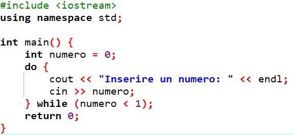
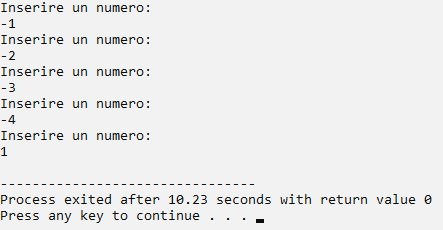

Il ciclo Do-while è una iterazione che funziona partendo con l’esecuzione dell’operazione presente nel blocco delle istruzioni, al termine della quale si esegue il test per valutare la condizione di uscita, che può avere come risultato vero o falso:
il risultato vero, si torna indietro e si ripete il ciclo;
con il risultato falso, si esce dall’altro ramo e si prosegue il programma con le istruzioni successive.
L'istruzione del ciclo While viene chiamata "controllo di testa" o "in testa" perché si esegue/ripete solo dopo l’esito Vero di un test iniziale.
Esempio di ciclo Do-While in C++: Stampa i numeri naturali compresi tra 1 e un numero letto in input con estremi inclusi - Codice
int main() {
int numero = 0;
do{
cout<<"Inserire un numero: "<<"endl";
cin>>numero;
} while(numero <"1");
return 0;
}
Esempio di ciclo Do-While in C++: Stampa i numeri naturali compresi tra 1 e un numero letto in input con estremi inclusi - Codice di programmazione

Esempio di ciclo Do-While in C++: Stampa i numeri naturali compresi tra 1 e un numero letto in input con estremi inclusi - Immagine a video

Realizzato da Lorenzo Cappoli e Daniel Casprini